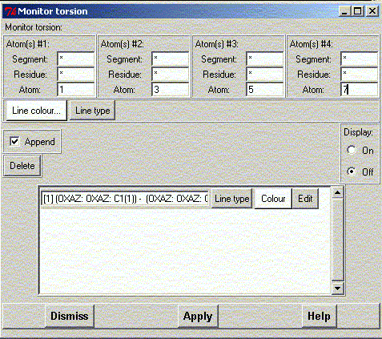
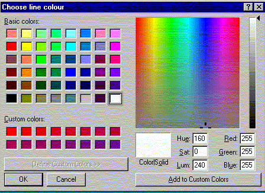
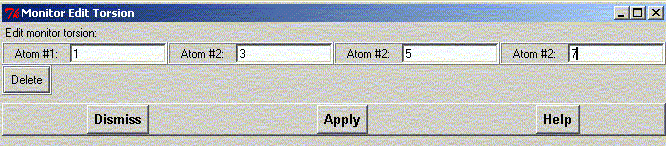

**************************************************************************
Monitor Torsion Widget
Leif Laaksonen CSC 1996
**************************************************************************
Select the atom in set #1, #2, #3 and #4 to define a torsion, choose a torsion colour and click the apply button.
To display the selected torsion put the display state to "On"
Press the "Delete all" button to delete all selected torsion segments
Choose the torsion colour from the colour menu.

To edit any of the defined sets press the "Edit" button. Now you can redefine the selected atoms or delete this particular defined torsion.

Line command: see monitor command
**************************************************************************
LUL/1996
**************************************************************************